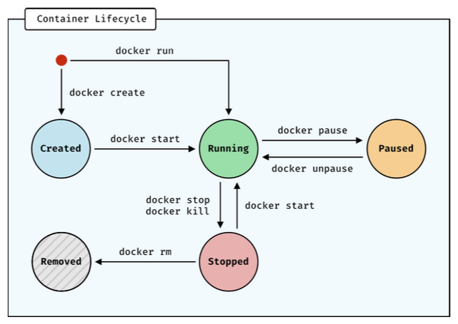

Docker containers
Launch a container
We launch a container by running, e.g
docker run hello-worldDocker looks for the hello-world image in order to start the container. If it cannot find it, it will fetch the image from DockerHub.
(docker run assumes you are saying “run image in container” but you can specify other Docker objects such as networks.)
The docker run command is actually a composite of the following two commands:
docker create --name [my_container_name] hello-world
docker start [my_container]Here is an applied example:
docker run --name my-container debian /bin/echo "Hello, world"This creates and runs a container from the Debian image and executes /bin/echo inside of it. Once you have run the above line, if the process is successful it will exit. The container will stop running but it will remain in memory. Nothing will be output (no “Hello, world”), because when you run it, you are outside of the container.
Launch a container as a daemon
You can also run a container as a daemon. In this mode, the container will run in the background and detach from the console. For example:
docker run -d debian /bin/sh -c /bin/sh -c "while true; do echo 'Hello!'; sleep 1; done"Inside the container, this will echo “Hello!” every second in an infinite loop whilst the daemon is active.
The above command will not actually output anything. Instead it wil ouput the container ID, e.g:
2749d796cbd64e9cf57307329e792587c39d8244f2377e62d78f3f3f77eecdb4You can use this to access the log for the container. When you do so, you will then see the output:
docker log 2749
hello
hello
hello
...(We could also use the container name to reference the container, if we launched it with the --name param.)
Stopping a container
docker stop 2749There will be a delay because it shuts down gracefully. It sends a SIGINT to the process in the container with PID 1 (i.e the root or parent process for the container).
stop will keep the container in memory. This means you can still refer bak to the logs and that it can be restarted.
Instead of stop, if you were to use:
docker rm 2749The container will be stopped and deleted. The logs are deleted and the container cannot be recovered.
We can also tell Docker to immediately remove a container after it exits:
docker run --rm [image]Interacting with containers
In the examples so far the container is a closed box. You don’t have a terminal through which you can interact with the container as you would with an OS. You can only start the container and view its activities by accessing the logs.
For images that have an OS we can use -i -t to launch a terminal in interactive mode.
docker run -i -t debian /bin/bash
root@0022da12f2f2:/# ls
bin boot dev etc home lib media mnt opt proc root run sbin srv sys tmp usr var
root@0022da12f2f2:/# whoami
root
root@0022da12f2f2:/# ls usr/
bin games include lib libexec local sbin share srcNote that it defaults to the root user.
Containers are lightweight and should only contain the minium environment needed to run an application. For this reason OSs that are included in an image are often very stripped-back and many programs and processes will not be there by default. (Although you could install a package manager and install the commands you need.)
The previous command launches the container and enters into it with a terminal. If a container is already running, you can enter into it in terminal mode with exec:
docker exec -i -t my_container bashIf a container is running in detached mode we can attach to the main process with docker attach
docker attach my_containerContainer lifecycle

All containers have a lifecycle represented by five distinct states. Each state has an associated command:
- created
docker create,docker run
- running
- paused
docker pause,docker unpause
- stopped
docker stop,docker kill
- removed
docker rm
Main container commands
docker create # create container from image
docker run # create and start container from image
docker run --name # add custom name for container
docker ps # list currently active containers
docker ps -a # list all containers (inactive and active)
docker logs # display a container log
docker stop # stop a running container
docker start # starts a stopped (exited) container
docker rm # remove a stopped (exited) containerContainer troubleshooting
Lots of diagnostic output:
docker inspect container_nameList processes (from outside):
docker top container_nameView logs
docker logs container_name